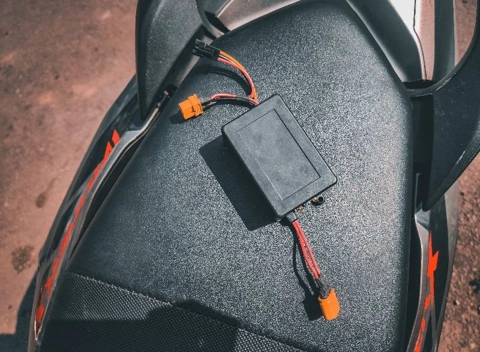
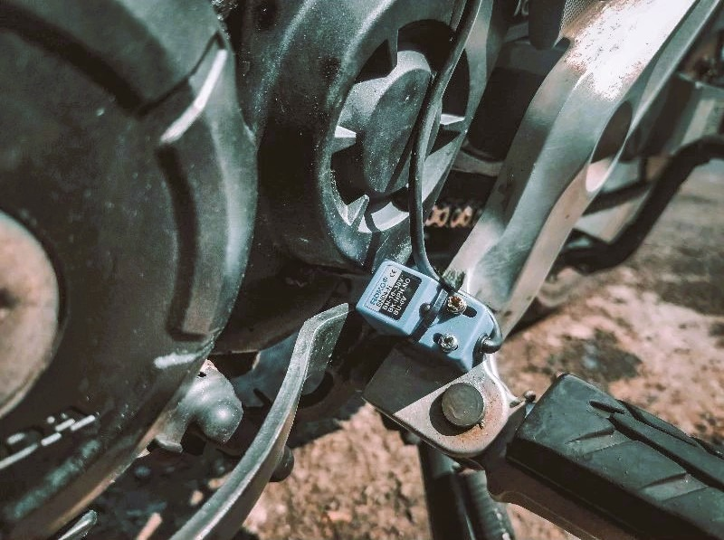
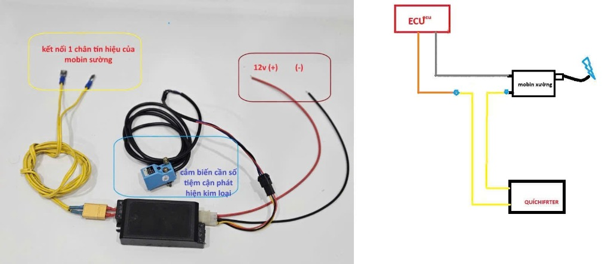
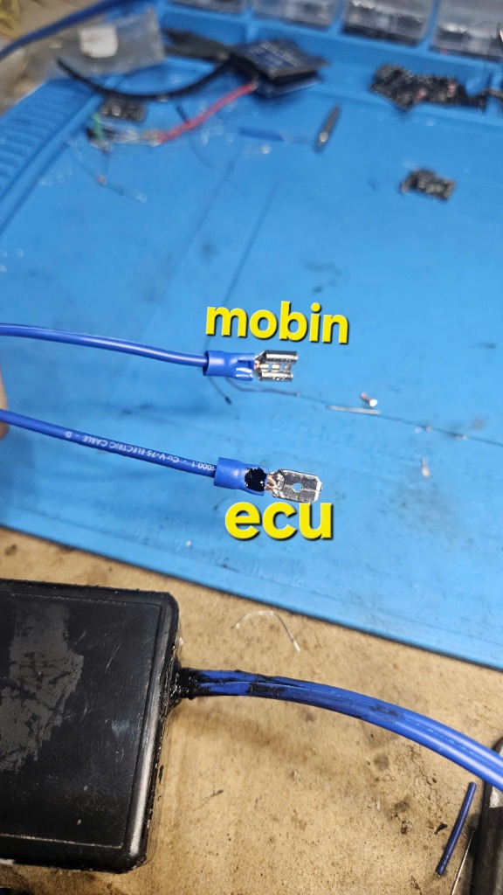
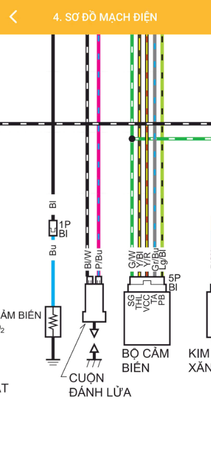
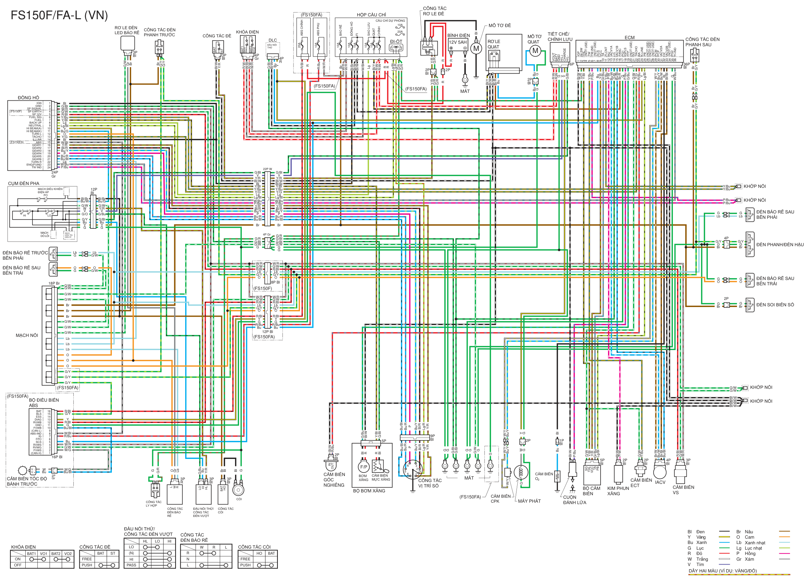

HỆ THỐNG SANG SỐ NHANH KỸ THUẬT SỐ ĐỈNH CAO — BẢN THƯƠNG MẠI 2026
Khác biệt với các dòng Quickshifter trôi nổi dùng rơ-le cơ học đóng cắt thô bạo hoặc biến trở vặn vít lạc hậu, Quickshifter TỰ LÀM ĐIỆN TỬ Pro áp dụng những công nghệ điều khiển điện tử xe đua tối tân nhất:
Sử dụng bộ đếm phần cứng 64-bit tốc độ cao của ESP32 (High-Resolution Hardware Timer). Thời gian ngắt dập mass chính xác tuyệt đối từng micro-giây, không bị ảnh hưởng bởi độ trễ Task hay vòng lặp CPU.
Hồi phục công suất êm ái qua 4 pha dốc trơn (25% ➜ 50% ➜ 75% ➜ 100%) trong 20ms ngay sau khi sang số. Loại bỏ hoàn toàn cú giật dội mô-men xoắn vào hộp số, xích tải và nồi xe.
Mạch tự phát Wi-Fi Access Point độc lập. Mọi điện thoại iPhone, Android chỉ cần kết nối Wi-Fi là mở được bảng điều khiển Racing trực tiếp trên trình duyệt, không lo xung đột ứng dụng hay lỗi hệ điều hành.
Tự động nhận diện vòng tua máy để áp dụng thời gian ngắt tối ưu: tua thấp ngắt dài 75–85ms để sang số êm ái đi phố; tua cao ngắt chớp nhoáng 50–55ms để tăng tốc xé gió.
Ngắt trực tiếp trên đường KÍCH ÂM dập mass (Cọc Đen) qua linh kiện cách ly quang Optocoupler công nghiệp 1000V. Không cắt dây zin, bảo vệ an toàn 100% cho ECU và hệ thống phun xăng điện tử FI.
Tích hợp hiệu ứng bắn bắp rang giòn rã (Backfire Popcorn) khi dìm cần số ở tua cao, cùng tính năng khóa lửa xe thông minh Morse Lock bằng thao tác cần số độc quyền.
Khi sở hữu thiết bị, người dùng chỉ cần dùng điện thoại (iPhone hoặc Android) kết nối vào sóng Wi-Fi Quickshifter_AP là mở ngay bảng điều khiển Web Cockpit tuyệt đẹp với 6 chuyên mục chức năng đua chuyên nghiệp:
TELEMETRY THỜI GIAN THỰC
IDLE (tự do) ➜ chuyển sang ACTIVE (xanh neon chớp sáng) ngay khi chân người lái tác động lực vào cần số.STANDBY (đang đánh lửa bình thường) ➜ chớp đỏ rực CUTTING khi mạch thực hiện ngắt lửa trung gian (hiển thị mili-giây cắt thực tế).THUẬT TOÁN CẮT LỬA CĂN BẢN
Normally Open (Thường mở) hoặc Normally Closed (Thường đóng) để tương thích 100% với mọi loại cảm biến tiệm cận kim loại, công tắc cơ học hoặc cảm biến áp lực loadcell.2.500 – 3.500 RPM. Ngăn chặn triệt để hiện tượng giật cục hoặc tắt máy khi đi phố tốc độ rùa, lùi dắt xe hoặc dừng chờ đèn đỏ garanty.60 – 70 ms (Xe zin: 65ms; Xe độ nhẹ: 60ms; Xe trường: 55ms). Giảm 5ms nếu bị khựng giật, tăng 5ms nếu bị sượng nặng chân số.Debounce (15ms) chống rung nảy cần số khi qua ổ gà; Cooldown (250ms) bảo vệ hộp số, bắt buộc nhả dứt điểm cần số mới cho phép lần cắt tiếp theo.Min RPM cao hơn tốc độ Garanty của xe ít nhất 1.000 RPM (Ví dụ garanty 1.500 RPM thì cài Min RPM từ 2.800 – 3.000 RPM). Kích hoạt Soft Restore để sang số êm ái như xe phân khối lớn có ECU độ cao cấp.
BẢN ĐỒ CẮT LỬA ĐA ĐIỂM THÔNG MINH
75 – 85 ms. Giúp sang số êm ái khi đi dạo phố, chở người ngồi sau không bị chồm giật.65 – 70 ms. Tăng tốc liền mạch, bắt số ngọt ngào trên đường trường.50 – 58 ms. Xe bắn đi như mũi tên, không một mili-giây bị hụt hơi, duy trì lực kéo mô-men xoắn tối đa.BÀN THỬ NGHIỆM MÔ PHỎNG AN TOÀN
40ms, 65ms, 90ms. Dùng ngay sau khi lắp mạch (chưa cần nổ máy) để nghe tiếng rơ-le nhảy và kiểm tra đèn LED, xác nhận mạch đã thông suốt 100%.3.000 RPM, 6.000 RPM, 9.000 RPM, 12.000 RPM mà không cần nổ máy, không gây tiếng ồn, kiểm tra đồng hồ hiển thị hoàn hảo.Test Cut 65ms: nếu nghe tiếng "tách" dứt khoát trên hộp điều khiển là hệ thống đã sẵn sàng 100%!
HIỆU CHUẨN, KHÓA SỐ & HỘP ĐEN
Scale Factor khớp 100% với đồng hồ xe.CẬP NHẬT KHÔNG DÂY & SAO LƯU
firmware.bin chính hãng trực tiếp qua sóng Wi-Fi trong 10 giây. Không cần tháo hộp mạch, không cần cắm cáp nạp, thiết bị tự động khởi động lại sau khi nạp xong.
Khi hết thời gian ngắt (cut time), mạch truyền thống đóng lại 100% dòng điện đánh lửa ngay tức khắc. Lúc này các vấu răng số (dog-teeth) mới vừa trượt vào nhau chưa ép khít toàn phần, cú giật dội 100% mô-men xoắn (Torque Spike) sẽ như một búa tạ đập vào bánh răng số, làm:
• Mẻ vấu số 2 và số 3, gây nhảy số ảo hoặc tuôn số.
• Rung nảy xích tải, mau chùng sên và dập rách cao su đùm.
• Xe bị giật khựng dội ngược, nón bảo hiểm va đập khó chịu.
Sử dụng ESP32 64-bit High-Resolution Hardware Timer chia quãng giảm chấn (mặc định 20ms) thành 4 pha băm xung dốc trơn:
• Pha 1 (25% Duty): Mớm nhẹ tia lửa, kéo trớn quán tính cốt máy.
• Pha 2 (50% Duty): Hồi 50% công suất, triệt tiêu khe hở rơ của vấu số.
• Pha 3 (75% Duty): Nén êm lò xo bố nồi, tăng tốc trơn tru không va đập.
• Pha 4 (100% Duty): Full Spark, giải phóng 100% mã lực xé gió tăng tốc!
Thời gian giảm chấn 30ms (mỗi pha 7.5ms). Cực kỳ thích hợp cho người dùng đi làm hằng ngày, chở người thân êm ái như xe tay ga, hoàn toàn không nghe tiếng khựng hay va nón bảo hiểm.
Thời gian giảm chấn 20ms (mỗi pha 5.0ms) — Mặc định xuất xưởng. Đạt tỉ lệ vàng giữa tốc độ bắt đà bốc máy và độ êm dịu, bảo vệ an toàn cho cả xe zin lẫn xe độ máy 62zz/65zz.
Thời gian giảm chấn 12ms (mỗi pha 3.0ms). Tối ưu hóa cho các giải đua 400m hoặc đua sân khép kín, rút ngắn tối đa thời gian dốc trơn để xe bứt tốc chớp nhoáng xé gió.
Tắt tính năng giảm chấn (Damp = 0ms), trả thẳng 100% tia lửa ngay sau khi cắt. Dành cho những biker thích cảm giác giật bốc thô bạo kiểu xe đua cổ điển.
Bảng đối chiếu minh bạch dưới đây giải thích vì sao Quickshifter TỰ LÀM ĐIỆN TỬ Pro vượt trội hoàn toàn so với các loại mạch cơ trôi nổi:
| Tiêu Chí Kỹ Thuật | ⭐ Quickshifter TỰ LÀM ĐIỆN TỬ Pro | ❌ Quickshifter Cơ / Giá Rẻ Trôi Nổi |
|---|---|---|
| An Toàn Điện & Lắp Đặt | ✅ 100% Cắm giắc Plug & Play, ngắt đường kích âm cách ly quang 1000V, giữ nguyên zin dây điện xe. | ❌ Phải cắt nối dây zin, cắt nguồn 12V thô bạo dễ chập cháy cầu chì hoặc chết MOSFET của ECU. |
| Giao Diện & Cài Đặt | ✅ Web Cockpit Wi-Fi trực quan, màn hình đo tua máy, đồ thị trực tiếp trên điện thoại (không cần app). | ❌ Vặn biến trở cơ học bằng tuốc-nơ-vít mù quáng, không biết thông số đang ở mức bao nhiêu ms. |
| Tốc Độ Xử Lý & Độ Trễ | ✅ Bộ xử lý kỹ thuật số < 1ms, phản hồi chớp nhoáng theo thời gian thực vòng tua máy. | ❌ Dùng rơ-le cơ hoặc mạch định thời 555 trễ nải 20–50ms, dễ nhảy số ảo khi tua máy cao. |
| Bản Đồ Cắt Lửa | ✅ Auto-Map 12 dải tua độc lập: Đi phố tua thấp êm ái, kéo ga tua cao sang số cực nhanh không hụt đà. | ❌ Chỉ có 1 mức cố định cho mọi dải tua: Cài êm tua thấp thì tua cao bị sượng; cài nhanh tua cao thì đi phố bị giật khựng. |
| Mô Phỏng Thử Nghiệm | ✅ Bàn Test Bench thông minh: Thử rơ-le và giả lập tua máy trong nhà mà không cần nổ máy, không ồn ào. | ❌ Không có mô phỏng, bắt buộc phải nổ máy nẹt pô ầm ĩ ngoài đường mới biết mạch có hoạt động hay không. |
| Chống Trộm Bàn Đạp Số | ✅ Khóa Morse Lock bằng chân số: Đạp giữ cần số 3 giây để khóa lửa xe bí mật, trộm bẻ khóa cũng không thể nổ máy. | ❌ Không có tính năng chống trộm. |
| Nâng Cấp Phần Mềm | ✅ Cập nhật không dây OTA qua Wi-Fi trong 10 giây; xuất file lưu trữ và chia sẻ map xe. | ❌ Mạch kín cố định, lỗi là phải vứt bỏ hoặc mua cục mới. |






| Dòng Xe / Hãng | 🟢 Cọc XANH (+12V Thường Trực) | ⚫ Cọc ĐEN (-KÍCH Tín Hiệu ECU) | Thao Tác Lắp Quickshifter |
|---|---|---|---|
| Honda (Winner 150/X, Sonic, CBR150, Wave RSX Fi, Future Fi) | Dây Bl/W (Đen sọc Trắng) Nguồn +12V từ cầu chì FI 10A |
Dây P/Bu (Hồng sọc Xanh) Chân 18 IGPLS dập mass |
Cọc Xanh: CẮM THẲNG ZIN Cọc Đen: Ngắt qua 2 đầu cos Quickshifter |
| Yamaha (Exciter 150, Exciter 155 VVA, R15, MT-15) | Dây R/Br (Đỏ sọc Nâu) hoặc Nâu Nguồn +12V sau khóa |
Dây Orange (Cam) Xung kích âm từ ECU |
Cọc 12V: CẮM THẲNG ZIN Cọc Cam: Ngắt qua 2 đầu cos Quickshifter |
| Suzuki (Raider 150 Fi, Satria 150 Fi, GSX-R150/S150) | Dây O/W (Cam sọc Trắng) Nguồn +12V sau khóa |
Dây W/Bu (Trắng sọc Xanh) Xung kích âm từ ECM |
Cọc 12V: CẮM THẲNG ZIN Cọc Kích: Ngắt qua 2 đầu cos Quickshifter |
Trên Mobin sườn thực tế:
• Cọc Xanh (+12V) nhận dây Đen/Trắng Bl/W ➜ GIỮ NGUYÊN NỐI THẲNG.
• Cọc Đen (-KÍCH) nhận dây Hồng/Xanh P/Bu từ ECU ➜ Rút đầu giắc zin này ra.
Lấy đầu giắc zin tín hiệu âm (dây P/Bu) vừa rút ở bước 1, cắm chặt vào đầu cos đực [ecu] của bộ Quickshifter. Bọc ống gen cách điện an toàn.
Lấy đầu cos cái [mobin] của bộ Quickshifter cắm thẳng vào Cọc Đen (-KÍCH) trên Mobin sườn xe. Chu trình ngắt lửa trung gian đã sẵn sàng!
• Dây Đỏ: Đấu vào nguồn dương +12V sau chìa khóa xe.
• Dây Đen: Bắt chặt vào ốc mass sườn xe.
• Cảm biến tiệm cận: Cố định pát giữ cách cần số 1-3mm.
Bật chìa khóa xe (hoặc bật công tắc phụ nếu có). Hộp Quickshifter nhận nguồn 12V, đèn LED trạng thái sẽ sáng xanh báo hiệu hệ thống đã khởi động và phát sóng Wi-Fi cấu hình.
Mở điện thoại (iPhone hoặc Android), vào mục Cài đặt ➜ Wi-Fi. Tìm và kết nối vào mạng Wi-Fi có tên:
Quickshifter_AP
(Mặc định là Wi-Fi mở không cần mật khẩu).
Mở trình duyệt web bất kỳ và gõ vào thanh địa chỉ:
http://192.168.4.1
Màn hình Web Cockpit Racing sẽ hiển thị ngay tức thì!
• Vị trí bắt pát: Bắt 2 ốc siết chắc chắn xuyên qua tai cảm biến vào pát gác chân xe (như hình chụp thực tế). Cảm biến nằm gọn gàng, thẩm mỹ, không gây vướng víu mũi giày khi lái xe.
• Khe hở tiêu chuẩn: Đặt đầu cảm biến cách mấu gạt của cần số khoảng 1.5mm – 2.5mm. Khi người lái gạt cần số lên, cần số lướt qua mặt cảm biến ➜ Mạch kích hoạt ngắt lửa tức thì trong < 1 mili-giây.
• Độ bền công nghiệp: Cảm biến tiệm cận từ tính không tiếp xúc cơ học, không mòn lờn theo thời gian, chống nước mưa và bùn cát tuyệt đối.
Sau khi đã cài đặt cấu hình ban đầu, bạn không cần phải rút điện thoại ra khi đang lái xe. Toàn bộ tính năng cao cấp đều có thể điều khiển trực tiếp bằng chân:
| Tính Năng | Thao Tác Chân Số | Điều Kiện Kích Hoạt | Phản Hồi Động Cơ |
|---|---|---|---|
| Sang Số Nhanh (Quickshift) | Đá dứt khoát cần số lên (không bóp côn) | Vòng tua máy lớn hơn Min RPM (Mặc định > 2500 RPM) |
Ngắt lửa chớp nhoáng (55-135ms theo Auto-Map), số nhảy êm ru như xe đua |
| BẬT Launch Limiter | Nhấp cần số 3 cái liên tiếp (Triple-Click) | Xe đang đứng yên hoặc tua máy dưới 3000 RPM (thao tác trong 0.8s) | Tiếng bíp bíp xác nhận. Vặn hết ga xe hãm đúng tua mục tiêu (ví dụ 7000 RPM) |
| TẮT Launch Limiter | Nhấp cần số 2 cái liên tiếp (Double-Click) | Sau khi xe đã đề-pa xuất phát xong | Xe trở về trạng thái vòng tua tự do bình thường |
| Khóa Xe Chống Trộm (Morse Lock) | Đạp giữ cần số trên 3 giây khi tắt máy | Tính năng Lock Mode đã được bật trong cấu hình | Hộp Quickshifter ngắt hoàn toàn mạch đánh lửa, trộm bẻ khóa không thể nổ máy |
| Mở Khóa Xe | Đạp nhịp cần số theo mật mã (Ví dụ: Ngắn - Dài - Ngắn) | Bật khóa điện xe và gõ mật mã trong vòng 10 giây | Đúng mật mã ➜ Mạch cấp lại nguồn lửa, xe nổ máy bình thường |
• Chế độ: Auto-Map 12 Bands (Bật)
• Preset: Chuẩn Phố 150cc
• Vòng tua tối thiểu: 2500 RPM
• Thời gian ngắt cơ bản: 65 ms
• Lọc rung cần số: 15 ms
• Đảm bảo êm ái khi đi phố, tăng tốc mượt mà
• Chế độ: Auto-Map 12 Bands (Bật)
• Preset: Raider / Satria DOHC
• Dải tua cao 10000+: 55 – 60 ms
• Vòng tua tối thiểu: 3000 RPM
• Giúp số nhảy cực nhẹ, không sượng vú số
• Chế độ: Auto-Map / Fixed 50ms
• Preset: Drag 400m
• Launch Limiter: Cài 7500 RPM
• Nổ pô Popcorn: Chế độ băm xung thể thao
• Tăng tốc xé gió không hẫng vòng tua
| Hiện Tượng | Nguyên Nhân Chính | Cách Xử Lý Dứt Điểm |
|---|---|---|
| Đá cần số không có tác dụng cắt lửa | Tua máy đang thấp hơn Min RPM, hoặc cảm biến số cắm lỏng |
Kiểm tra vòng tua trên xe; vào tab Shift & Cut kiểm tra cảm biến số; bấm Lưu Cấu Hình |
| Sang số bị khựng giật, chồm xe | Thời gian cắt số (Cut Time) đang để quá dài | Vào tab Auto Map Curve, giảm bớt 5-10ms ở dải tua bị giật rồi bấm Lưu |
| Sang số bị sượng, nặng chân số | Thời gian cắt số quá ngắn, nhông chưa kịp ăn khớp | Tăng thêm 5-10ms ở dải tua đó để nhông số vào khớp êm ái |
Không dò thấy Wi-Fi Quickshifter_AP |
Đã hết thời gian chờ phát sóng Wi-Fi (AP Timeout) | Tắt khóa xe và bật lại để thiết bị mở lại Wi-Fi. Cài AP Timeout = 0 nếu muốn Wi-Fi luôn bật |